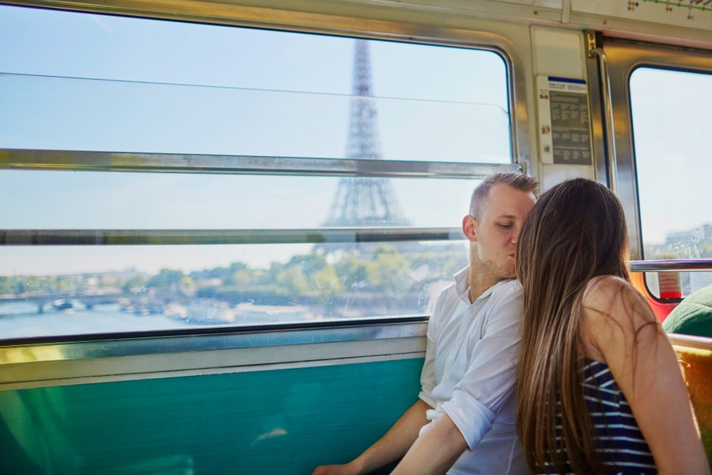

Benvenuti nella sezione "Chi Siamo" del nostro sito dedicato ai treni. Siamo un team appassionato di viaggi in treno e di tutto ciò che riguarda questo straordinario mezzo di trasporto. La nostra missione è quella di fornire ai nostri clienti informazioni dettagliate e accurate sui treni, sulle tratte disponibili, sulle tariffe e sulle opzioni di viaggio, in modo da rendere l'esperienza di viaggio in treno il più piacevole e conveniente possibile. Siamo costantemente aggiornati sulle ultime novità del settore ferroviario e collaboriamo con le principali compagnie ferroviarie per garantire un'ampia scelta di soluzioni di viaggio ai nostri clienti. Ci impegniamo anche a fornire un servizio clienti eccellente, in grado di rispondere a tutte le vostre domande e di aiutarvi a pianificare il vostro viaggio in treno in modo facile e veloce. Siamo fieri di poter offrire un servizio completo per i viaggi in treno, dal momento della prenotazione fino all'arrivo a destinazione. Grazie alla nostra passione e alla nostra esperienza, siamo in grado di offrire un servizio di alta qualità e di soddisfare le esigenze di tutti i nostri clienti. Scegliete di viaggiare in treno con noi e scoprirete un modo unico ed emozionante di esplorare il mondo, con la comodità, l'efficienza e la sicurezza che solo il treno può offrire. Grazie per aver scelto il nostro sito e per averci dato la possibilità di farvi scoprire il magico mondo dei treni.
Chi siamo


